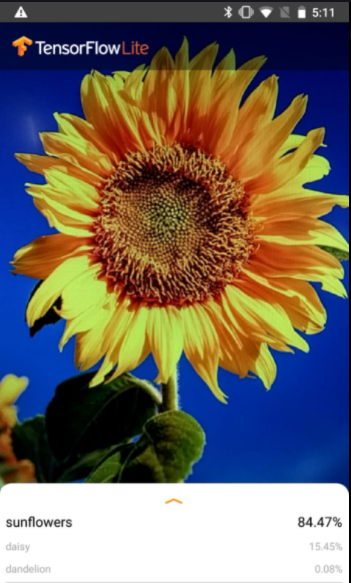
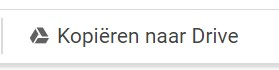
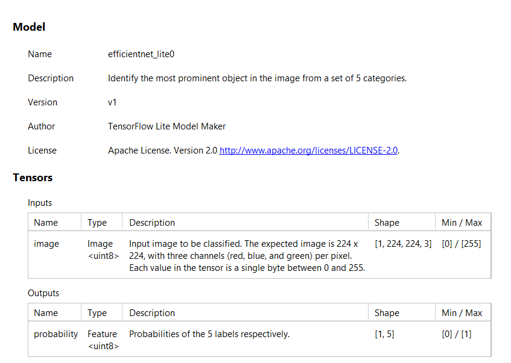

6.2. Fase 1: Maak een eerste app#
{kind=link}
We gaan een eerste App voor een Android telefoon maken waarmee je bepaalde bloemen kunt herkennen met je camera zoals je hiernaast ziet: Je richt je camera op een bloem en de app reageert door onder in het scherm te vertellen wat de meest passende bloemsoort is.
🛠 We nemen daartoe de volgende stappen:
6.2.1. Maak een neuraal netwerk dat bepaalde bloemen herkent#
Maak eerst een Google Account aan als je dit nog niet hebt en meld je aan voor Google Drive (https://drive.google.com/)
Volg deze link naar de Google Colab tutorial voor het classificeren van beelden, die is aangepast door Daniël Haitink zodat het netwerk kan worden getoond.
Of volg deze link naar de Google Colab tutorial voor het classificeren van beelden.
Klik op: Run in Google Colab
Er komt een tabblad in je browser bij “Model Maker Image Classification”. Zorg dat dat tabblad geopend is.
Je bent nu in een notebook. In een notebook heb je bepaalde gedeeltes die je cellen noemt. In deze cellen staat code in de taal python die je op de je op de server kunt laten uitvoeren. Bij de cellen met code die je kunt laten uitvoeren staat links boven []. Als je hier boven gaat staan krijg je een pijltje en als je op het pijltje klikt wordt de code in de cel uitgevoerd. Meestal moet je alle cellen van een notebook van boven naar beneden uitvoeren om een totaal programma uit te voeren.
{kind=link}
Het huidige notebook kun je niet opslaan. Zorg eerst dat je met de knop een eigen kopie maakt en ga naar het nieuwe tabblad
Voer de eerste cel die met !pip begint uit. Hiermee installeer je de tensorflow lite library waarin door Google ontwikkelde AI gereedschappen aanwezig zijn.
Voer de tweede cel die met import os begint uit. Hiermee haal je onder andere een aantal onderdelen uit de tensor bibliotheken op, die later gebruikt worden. Vooral de regel “from tflite_model_maker import image_classifier” is belangrijk voor dit project. image_clasifier is een voorgebakken AI module om beelden te kunnen classificeren.
{kind=link}
Zorg dat je het driehoekje bij “Simple End-to_End Example” naar beneden laat wijzen zodat “Get the data path” zichtbaar wordt.
Voer de derde cel die met image_path begint uit. Hiermee geef je aan op basis van welke gegevens het neurale netwerk getraind moet worden. Scroll in het notebook even naar beneden naar Step1 (flower_photos) om te zien wat de structuur is van de gegevens.
{kind=link}
Je hebt dus een aantal mappen met de naam van een bloem en in elke map een aantal plaatjes van deze bloem. Er zijn per bloem best veel plaatjes, wel zo’n 5000 per bloem. Scroll weer naar boven zodat je de derde cel weer ziet.
Ga terug naar “Run the example” en voer de cel onder “Step 1” die met data begint uit. Hier geef je aan dat de gegevens in twee groepen moeten worden gesplitst. Een groep met de naam train_data om te trainen en een groep met de naam test_data om te testen. 90% van de gegevens wordt voor testen gebruikte en 10% voor trainen.
Voer de cel onder “Step 2. Customize the TensorFlow model” uit die met model begint uit. In deze stap wordt het model gemaakt en tegelijkertijd getraind, dit duurt een tijdje. Na afloop zie je hoeveel parameters het neurale netwerk heeft en hoeveel daarvan te trainen waren. Hoeveel zijn dit er?
Hoe ziet het netwerk er dan uit? Druk op “+ Code” en voer in de nieuwe cel onderstaande code in en voer de cel uit. Je krijgt dan een plaatje met de verschillende lagen te zien.
tf.keras.utils.plot_model(model.model,to_file='pic.png',show_shapes=True)
Voer de cel onder “Step 3. Evaluate the model” die met loss begint uit. In deze stap wordt gekeken hoe accuraat het model is.
Nu heb je een neuraal netwerk getraind en wordt het tijd een agent (ofwel een app) rond dit netwerk te bouwen.
Voer de cel onder “Step 4. Export to TensorFlow Lite model” uit cel die met model.export begint. Hiermee exporteer je het model, dat we straks in onze app kunnen inlezen. Dit duurt weer een tijdje.
Je ziet onderstaand scherm (zonder rode omcirkeling) met aan de linkerkant van de uitgevoerde cel een aantal knopjes. Klik op het rood omcirkelde mapje.
{kind=link}
Je krijgt dan links het volgende te zien als je met je rechter muis knop op model.tflite klikt.
{kind=link}
Selecteer vervolgens Downloaden. Het model model.tflite staat daarna in de Download map van je PC of laptop.
6.2.2. Maak een agent (= app) die dit neurale netwerk gebruikt#
Installeer zo nodig Android Studio (https://developer.android.com/studio)
Download het volgende bestand en pak dit uit.
Kopieer model.tflite uit je Downloads map naar de map TFLClassify en verander van de kopie de naam in FlowerModel.tflite.
Start Android Studio
Selecteer Open
Ga naar de map TFLClassify en selecteer deze**.**
Laat alle Updates uitvoeren (Duurt een tijdje)
Selecteer finish links boven in het linker venster.
Selecteer met je rechter muisknop New > Other > TensorFlow Lite Model.
Selecteer het mapje aan de rechterkant van Model location en ga naar de map TFLClassify.
Selecteer FlowerModel.tflite en daarna OK en Finish.
Als het goed gegaan is zie je een tab voor dit bestand met de volgende informatie:
{kind=link}

Zorg dat er naast het hamertje aan de bovenkant finish geselecteerd is. Dit ziet er zo uit:
{kind=link}
Druk op het hamertje om de App te maken. Onderin het scherm zie je “Gradle build running”. Je kunt op Event log rechts onder klikken als je wilt zien wat er tijdens het maken gebeurt. Duurt een paar minuten
6.2.3. Zet de App op een Android telefoon#
Zet op je Android telefoon de Developer options en USB debugging aan volgens deze instructie: https://developer.android.com/studio/debug/dev-options.html#enable
(Let op: Je moet eerst de de Developer options en USB debugging op je Android telefoon aanzetten en daarna pas de Android telefoon verbinden met het USB - mini USB kabeltje)
Verbind je Android telefoon met het USB - USB mini kabeltje met je PC of laptop.
Als dit goed gaat zie je het device verschijnen. Dit ziet er ongeveer zo uit:
{kind=link}
Druk op het pijltje rechts om de App op je Android telefoon te installen. Geef op je Android telefoon toestemming.
Daarna moet je een tijd wachten. Tenslotte zie je op je Android telefoon een App als de volgende:
6.2.4. Test de App#
Je kunt de App testen door plaatjes van bijv. zonnebloemen op het internet te zoeken en kijken of deze als zonnebloemen herkend worden als je met de camera van je Android telefoon naar het plaatje kijkt. Doe dit ook voor wat andere bloemen waarvoor het neurale netwerk getraind is.